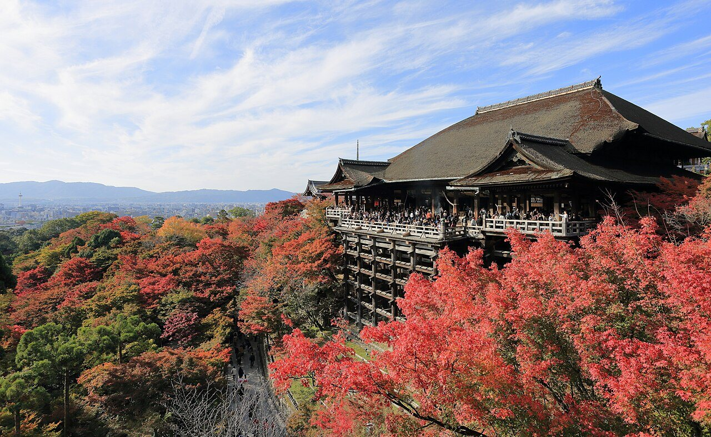

비스타는 조용함과 욕실,
역까지 걷는 거리는 비교.
두 글 모두 시설과 응대는 좋게 봤어. 캐리어를 놓기 애매했다는 평도 있어 객실 크기만 보고 넓다고 단정하지 않았어.
2026. 12. 02 WED — 12. 05 SAT · 2명
교토의 정원과 옛 골목.
오사카의 강변 카페와 저녁 한 끼.
어디를 더 보고 싶은지부터 골라보자.

낮에는 걷고, 저녁엔 따뜻하게.
얇은 옷을 겹쳐 입고 야간 정원엔 목도리 챙기기.
01 / THE WAY WE TRAVEL
목요일은 하루를, 금요일은 반나절을 쓸 수 있어.
02 / A PLACE TO REST
2인 1실·금연·20㎡ 이상. 필요한 숙박일의 합계를 비교해봐.
욕실과 객실 사진은 각 호텔의 공식 링크에서, 실제 투숙 사진은 네이버 후기에서 볼 수 있어. 사진·후기만으로 청결을 보장하거나 점수를 평균내지는 않았어.
03 / OUR FOUR DAYS
명소보다 이동이 많아지지 않게. 식사와 쉬는 시간도 남겨뒀어.
04 / SEE THE DISTANCE
공항부터 숙소까지. 핀을 누르면 사진과 주변 후보가 열려.
05 / LITTLE DETOURS
후보로 담아두면 해당 동네의 식당·카페를 시간표에서 고르기 쉬워져.
06 / WHAT WE READ
방문기에서 느낀 점과 올해 운영 정보는 구분해서 읽었어.
두 글 모두 시설과 응대는 좋게 봤어. 캐리어를 놓기 애매했다는 평도 있어 객실 크기만 보고 넓다고 단정하지 않았어.
MOUNT의 테라스 사진은 매력적이지만 실제 방문 글에는 맛이 아쉽다는 평도 있었어. 기타하마 레트로·고칸도 함께 비교해봐.